对调试软件不熟悉的用户，或者是新电机匹配驱动器，可以使用 “配置向导” 来进行参数配置和电机的基本测试。
步骤一：根据电机资料的实际参数与驱动器型号适配参数，以向下兼容的方式设置好参数，设置参数不能超出驱动器极限范围外，也不能设置超过电机极限范围。 设置参数双击或者直接写入后回车生效，并且保存参数后掉电才不丢失。例如以下图的基本参数的电机信息与电池组信息等。（需要注意的是电流一定要限制在电机允许范围内，不然有可能损坏电机）
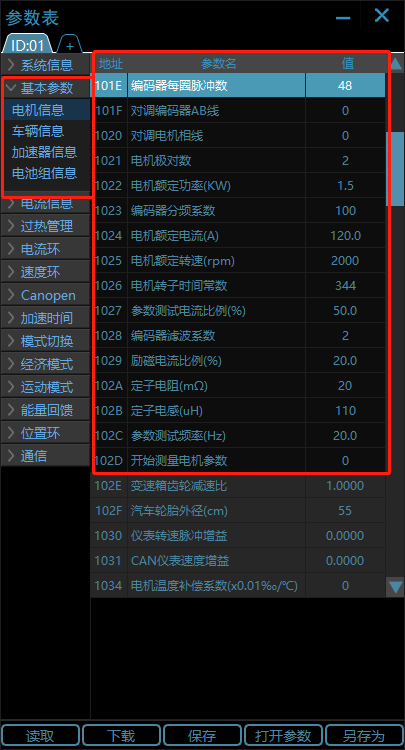
步骤二：在外部驱动器与电机线束接好并通讯正常，根据电机资料参数与驱动器适配好参数后，即可进行调试第一步，选择工作模式M里面的测试电流环模式， 此模式是针对于驱动器首次匹配电机检测驱动器与电机的硬件是否正确连接，软件逻辑方面是否符合，一般的异步电机按照 2 对极来匹配我们驱动器，测试电流环给启动电流（电机空载时额定电流的一半）， 转速反馈应该为正的转速 150rpm，这样是符合逻辑的，若转速不为 150RPM 或 150rpm 左右，则需要改 地址 101E：编码器每圈脉冲数，根据电机编码器分辨率修改。若速度反馈转速为负的转速， 则需要改地址 101F 对调编码器AB线或 1020 的对调电机相线，任意一个置 1 或 0; 使反馈转速为正的 150RPM 左右即可，例如下图：
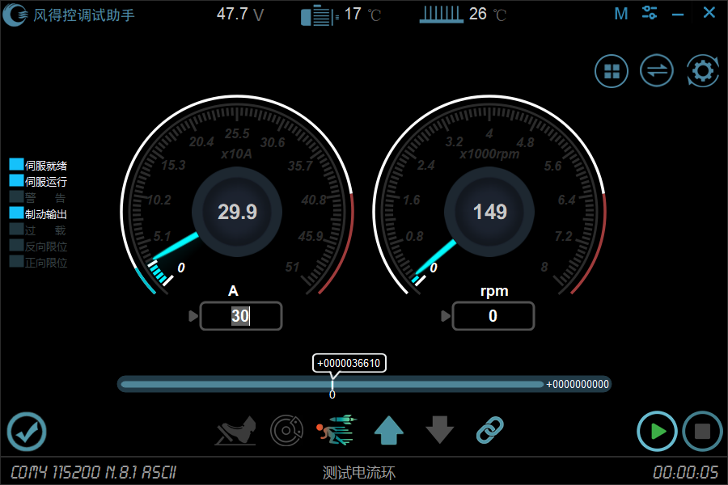
调试还需注意接线必须接前进挡信号，否则电机处于零速状态；目前电机为2对极，额定 60A，空载给 30A 电流，速度反馈为正的 149rpm（150rpm左右）即为正常；在测试电流环正常后，即可直接进行速度环控制。
步骤三：在测试电流环检测正常后，可以通过驱动器的参数识别模式进行测量电机的参数，使驱动器与电机的匹配的更高效。在测量前需要设置好电机的一些参数，还有地址 1027、102C 等，例如下图参数； 然后将工作模式切换至参数识别模式，并打开驱动器使能开关，就可以将地址 102D 开始测量电机参数 写 1 从而启动参数识别，参数识别过程可能需要等待 10s 时间，识别完成会自动关使能， 可以读取参数观察 1026 电机转子时间常数的变化，一般的多次识别后此参数变化不会相差很大。
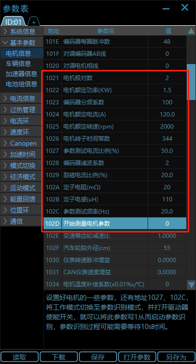
在参数识别完成时，驱动器的蜂鸣器会长鸣滴的声音，并自动关使能。完成参数识别模式后即可进行速度环控制调试。
步骤四：在前面三个步骤都完成后即可进行速度环控制调试。工作模式M选择速度环并确定，在速度仪表给定值处给定转速，反馈转速应该与给定一致，例如下图举例：
速度环给定1000rpm
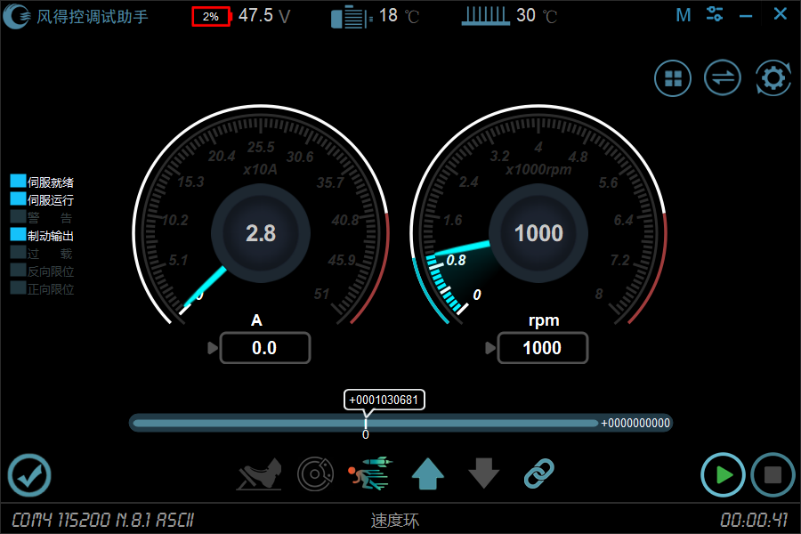
速度环给定-1000rpm
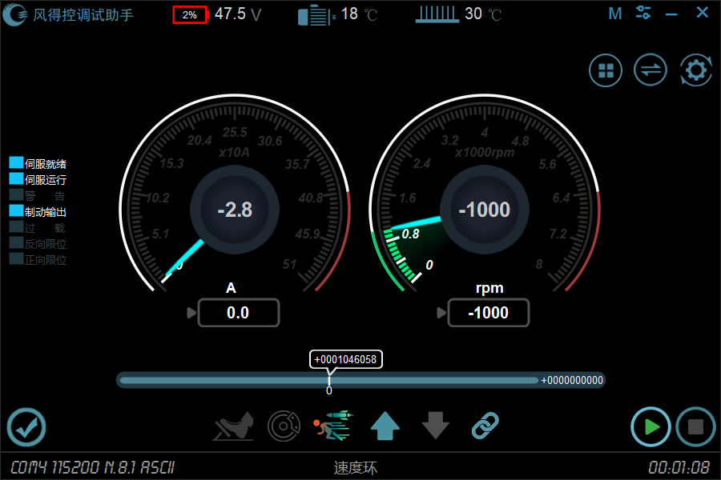
若给定速度与反馈速度相差很大，则需要排查其他问题，或者观察电机是否抖动或震荡，抖动和震荡则需要调试PID增益参数，根据经验值调试，可联系我司技术人员。
位置环要基于速度环控制正常的情况下才能控制，首先选择工作模式M位置环并确认，需要注意的是当切换为位置环后，原来的前进挡位就变成了正向限位，后退档位就变成了反向限位， 所以当打着前进档位也就是正向限位时无法正转，后退档位同理；选择位置环后在位置环给定值处给定脉冲值，例如下图示例：
位置环给定100000个脉冲
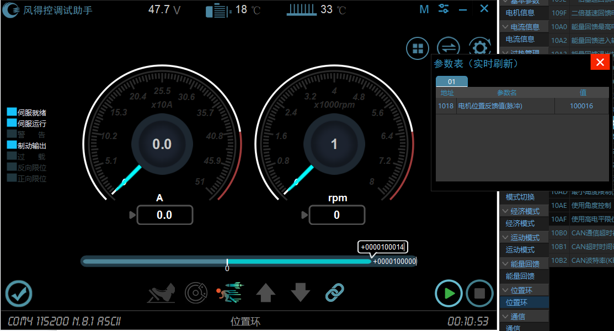
位置环给定-100000个脉冲
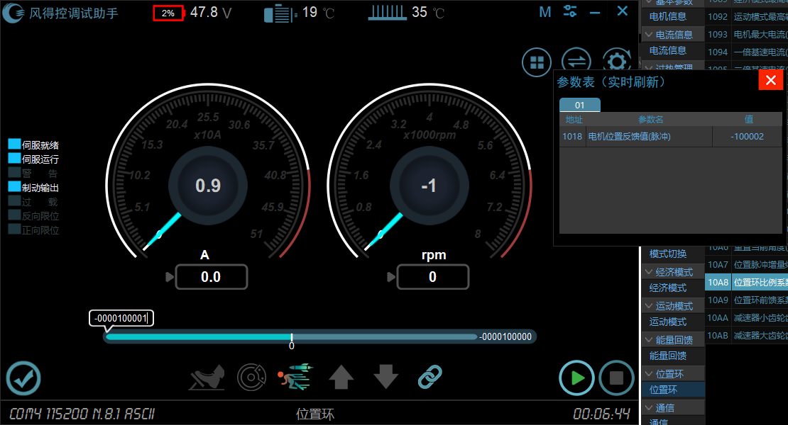
给定位置脉冲时需使能后，写入脉冲值后回车生效。
电流环控制对于速度相当于开环状态，只对于电流的一个闭环控制模式，给定多大的电流电机就会根据自身负载情况能达到多大的转速。
电流环给定5A电流
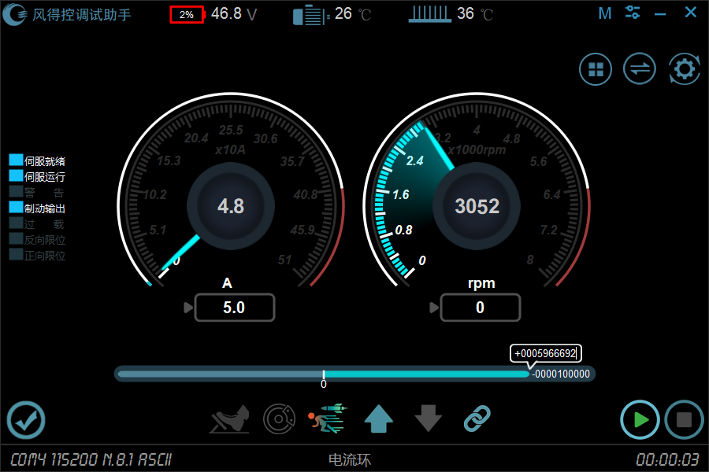
电流环给定-5A电流
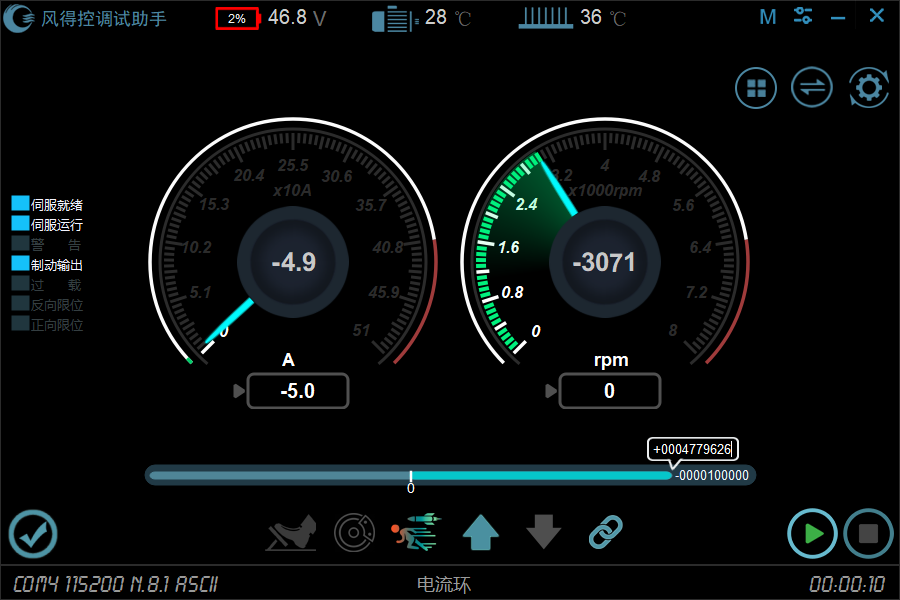
因异步电机不需要走电角度对零模式，固电角度对零在同步中介绍
鼠标单击软件主界面的 “菜单” 选择 “配置向导”，将会弹出配置窗口，该功能用于新电机参数的基本配置， 测试是否能正常测试电流环、电角度对零、电流环、速度环、位置环的基本测试，推荐对于刚开始使用本软件的使用。如下图所示。
(1)、点击 “开启”，在弹出的对话框，选择 “是”，当前电机必须要处于 非使能 状态。
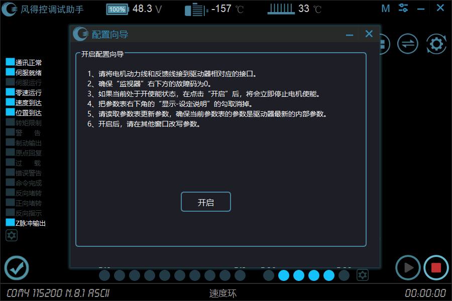
(2)、弹出“步骤一 电机参数与驱动器匹配”窗口，如下图
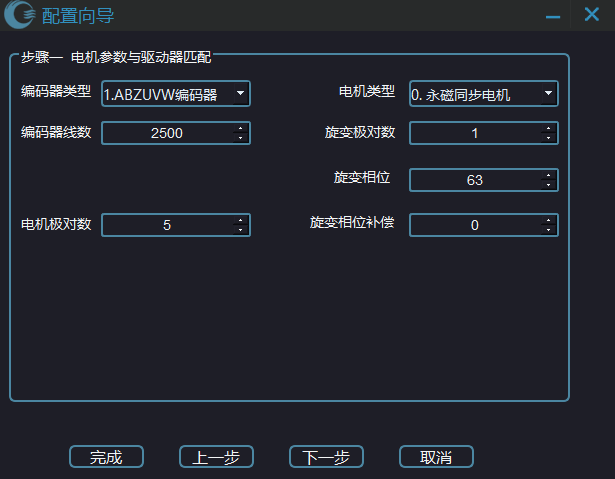
根据电机编码器类型、编码器线数、电机极对数的实际值来填写参数，其中反馈类型的 0:PMSM 为永磁同步电机，1:DC 为直流有刷电机
上图所示为编码器的反馈为 ABZUVW，编码器线束为 2500，电机极对数为 5 的永磁同步电机
配置完成后点击 “下一步”，将会把当前的参数写到驱动器内部。
(3)、弹出 “步骤二 设置电流相关参数” 窗口，如下图。
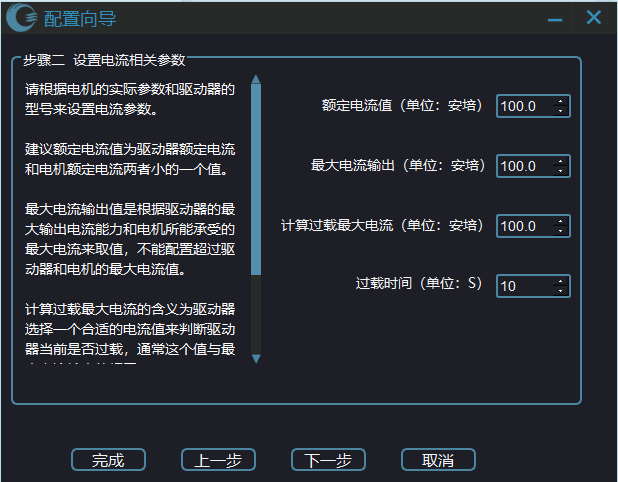
这里要根据电机自身的额定电流值、最大电流值和驱动器的最大输出电流、功率以向下兼容来调整。
配置参数时候，额定电流和最大电流输出不能超过驱动器的电流参数，同时也不能超过电机的电流参数。
通常情况下，上图中 “计算过载最大电流” 的值和 “最大电流输出” 是相同的。
点击 “下一步”，会将当前改写的电流参数写到驱动器内部中。
点击 “上一步”，会返回到上一个窗口。
(4)、弹出 “步骤三 设置速度相关参数” 窗口，如下图。
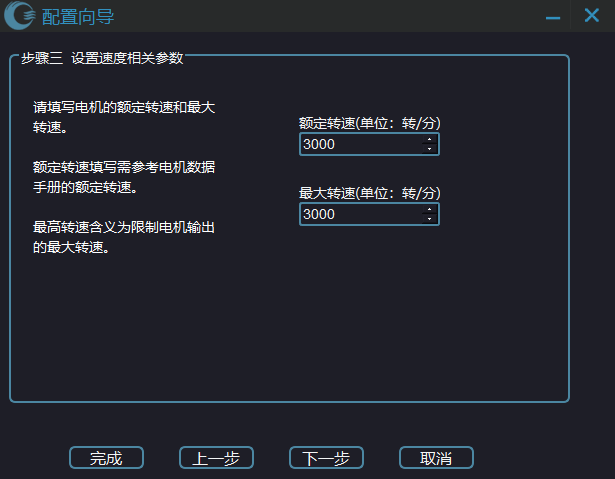
这里根据电机的额定转速和最大转速来设置，点击 “完成”，将会打开 “参数确认与修改” 窗口， 表示当前已经修改好的参数，是否还需要修改点击 “下一步”，会将当前改变的参数写到驱动器内部。
(5)、弹出 “步骤四 执行测试电流环工作模式” 窗口，如下图
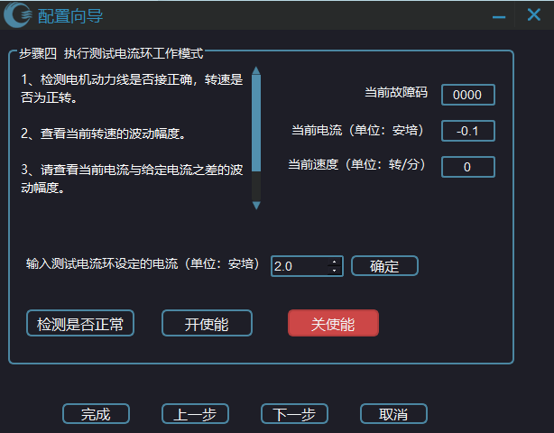
前面几个步骤，已经把电机参数，电流参数，速度参数配置好了，现在来测试电机转动 是否正常。
在这个窗口打开时，驱动器默认按照额定电流值的一半来执行 “测试电流环” 模式，
如果需要改写运转此模式的电流输出，可在上图设置，并点击 “确定” 将电流值写到驱动器内部。
点击 “开使能”，驱动器会执行 “测试电流环” 工作模式，如下图所示
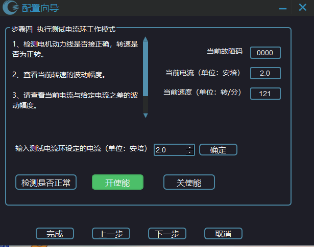
可以看到右上方，当前的电流为 2 安培，转速在 120 转左右波动，并且当前故障代码为 “0000” ，这里是正常的。
如果不了解如何判断电机转动是否正常，可以点击 “检测是否正常” 按钮来检测，如下图。
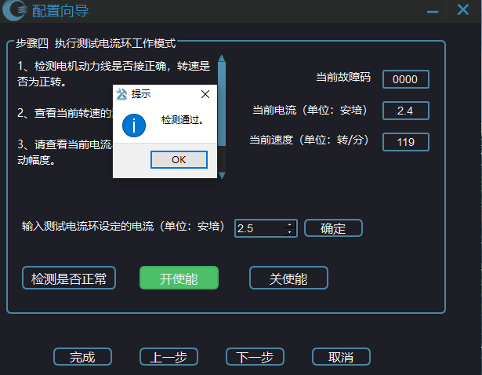
通常情况下，如果点击 “检测是否正常” 按钮，如果有问题，在弹出的窗口中会显示出现的问题。
该步骤执行后可以检测到当前电机动力线 UVW 是否接正确，电机反馈线是否与驱动器对应接口接通，
如果故障码不是 “0000” ，可以到 “监视器” 观察具体故障类型。
点击 “完成”，将会打开 “参数确认与修改” 窗口，表示当前已经修改好的参数，是否还需要修改。
注意：点击 “关使能” 后，再点击 “下一步”。
(6)、弹出 “步骤五 执行电角度对零工作模式” 窗口，如下图
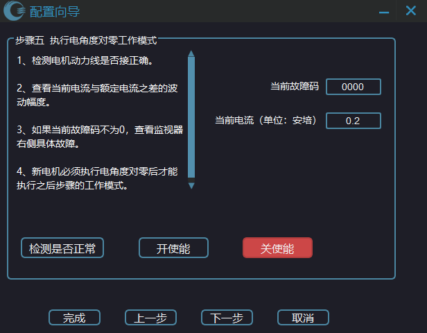
对于新配置的电机或者电机反馈线线序变换，必须执行该模式来获得电角度的零偏，否则在应用中可能会出现故障。
点击 “开使能”，驱动器会以 测试电流环时给定的电流 来执行 “电角度对零模式”。
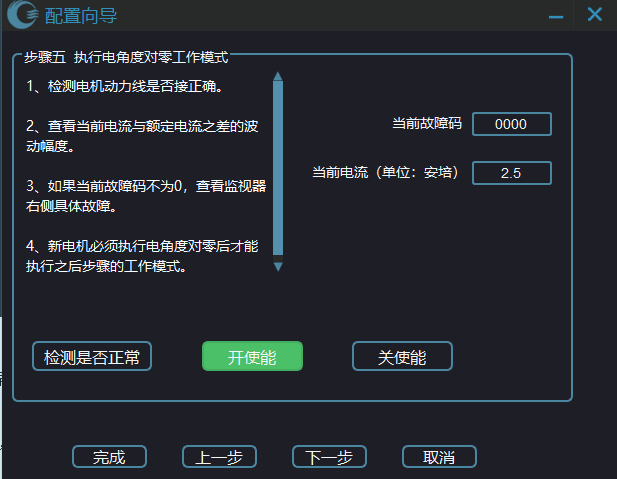
点击 “检测是否正常”，将会检测电流反馈是否与测试电流环给定电流值接近，检测是否有故障码
点击 “完成”，将会打开 “参数确认与修改” 窗口，表示当前已经修改好的参数，是否还需要修改
注意：点击 “关使能” 后，再点击 “下一步”。
(7)、弹出 “步骤六 执行速度环工作模式” 窗口，如下图
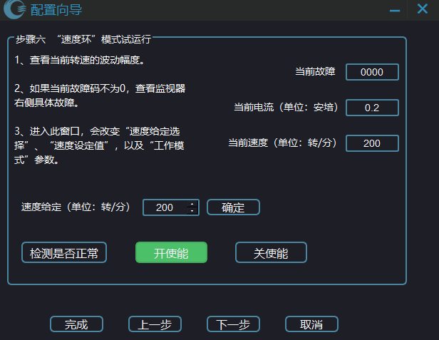
点击 “开使能”，将会按照 “速度环” 模式运转。 在 “速度给定” 框中改写速度，点击 “确定” 生效。
(8)、弹出 “配置驱动器应用参数” 窗口，如下图
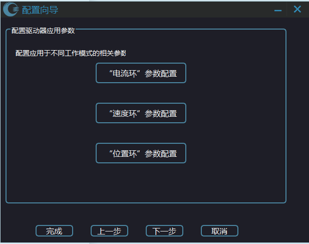
该窗口是用于配置在应用上调试哪个环的参数
“电流环”参数配置 用于配置电流给定选择。
“速度环”参数配置 用于配置速度给定选择，上位机控制的加、减速度。
“位置环”参数配置 用于配置位置给定选择、电子齿轮比(用于方向 + 脉冲、上位机给定)、 位置到达误差范围。
点击 “完成”，将会打开 “参数确认” 窗口，表示当前已经修改好的参数，是否还需要修改
(9)、在 “配置驱动器应用参数” 窗口点击 “下一步” 或者 “完成”，将会打开 “参数确认” 窗口，如下图。
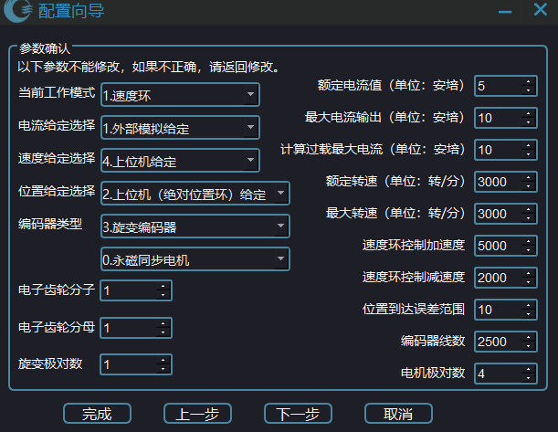
请仔细查看前面几个步骤所修改的电机参数、电流参数、速度参数，工作模式等，如果不对，需要返回之前步骤进行修改。
点击 “下一步”，将会把当前修改的参数全部写到驱动器内部中。
(10)、弹出 “保存参数到外部存储器” 窗口，如下图
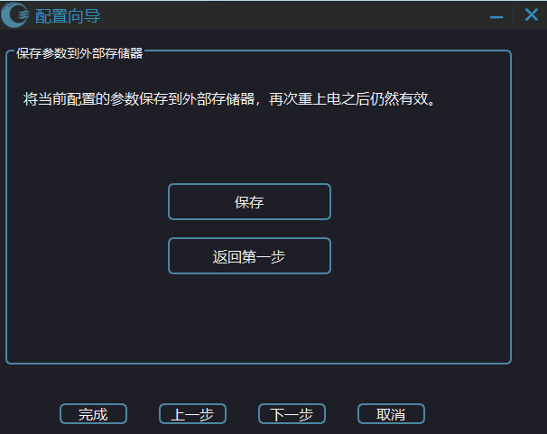
点击 “保存”，将会发送指令，会将所有参数都保存到外部存储器中，使得再次重上电后仍然有效。
(11)、点击 “取消” 结束配置向导。